Plan your whole house. Find everything in it.
Draw your house in 2D and 3D – every compartment of every piece of furniture automatically becomes a storage location. Check items in with a click, a QR scan or simply with the AI assistant: photograph a shelf and it's inventoried.
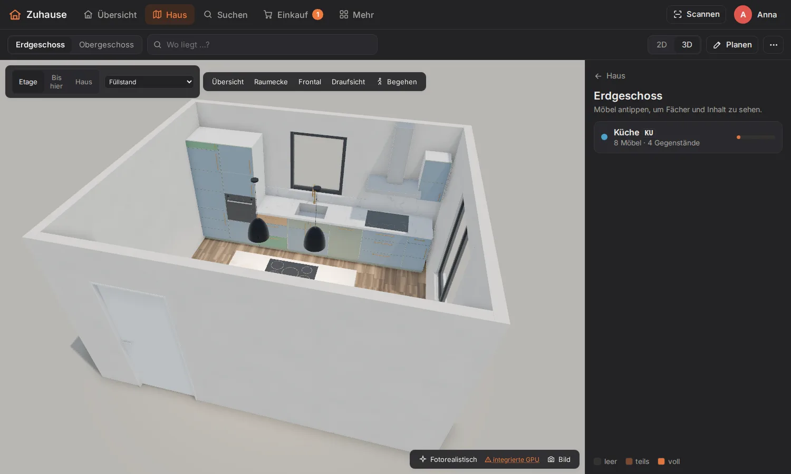
The AI assistant helps you tidy up
Say, type or photograph what happened – the assistant books it into the right compartment. It knows your house, your compartments by name and everything in them.
Photograph a shelf = inventory done
Take a photo of the shelf or drawer, ideally with the compartment's QR label in the picture: the assistant recognizes all items in the photo, creates new ones, increases existing ones and checks everything into that compartment in one step. From four transactions on, it shows the list for confirmation first. It can also store the photo with the item right away.
Just say it
"3 cans of tomatoes into the pantry cabinet, best before 05/2027" – by microphone or text. It understands compartments by name: "kitchen fridge top".
Ask and find
"Where is the cordless drill?", "What expires this week?" – the answer names the compartment, "Show in house" lights it up in the plan.
QR labels in photos
The app reads compartment and item labels from the picture itself – "this goes here" is enough.
Shopping and prices
Add to the list, tick off, and "Where is butter cheapest right now?" – price research with retailer, nearest store and source.
Talk to the wall terminal
Press "Speak", tap your tile, go – the answer is read aloud. Limited to search, transactions and shopping there, never administration.
Safe to use
Every transaction with Undo, acts with the person's permissions. Any OpenAI-compatible provider (OpenRouter, LiteLLM …), plus an MCP server for Claude & co.
- 3× canned tomatoesnew
- 2× jarred picklesnew
- 1× AA batteries (8-pack)+1
- 1× toolboxexisting
- 1× potting soil 10 lnew
Re-enacted conversation · image recognition and speech via your AI provider
From floor plan to drawer
homemgmt-ng combines a house planner with inventory management. The plan is the inventory.
KU-C2 = Kitchen · Furniture C · Compartment 2
The inventory lives in the plan
No typing in shelf numbers: tap a piece of furniture to see its compartments, a compartment to see its contents – right next to the floor plan.
- Check in, take out, move, undo
- Expiry with quick picks and warnings
- When furniture moves, its contents move along
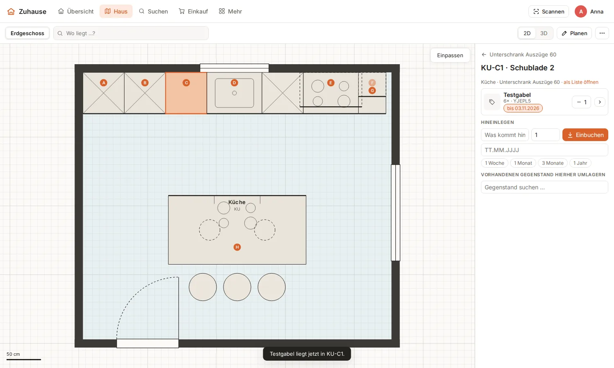
Where is …?
One search across all rooms and storage areas. Matches light up in the floor plan and in 3D, floors with matches get a dot.
- Search by name, code, compartment or category
- Heatmap: what gets moved often, what just sits around?
- Coloring by fill level and expiry
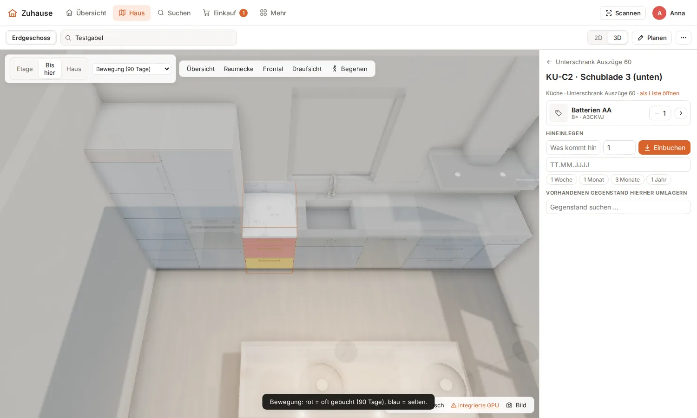
A real house planner
Grown out of a kitchen planner: walls with snapping and dimensions, procedural cabinet models, PBR materials and photorealistic path tracing.
- Basement to attic, outdoor area, stairs
- Object library: build your own furniture types, community catalog
- 3D furniture from Poly Haven and FurniMesh, your own .glb
- Walk through like in a game – up the stairs too
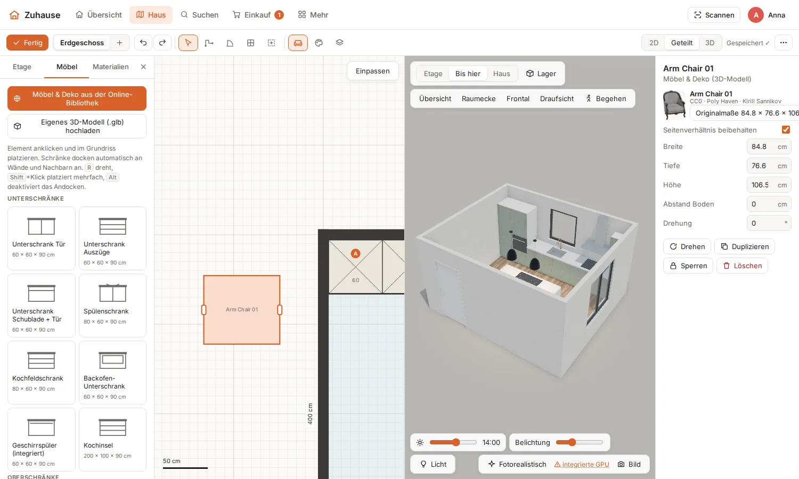
On your phone
Installable as an app, with the same navigation as on the PC – at the bottom on the phone, with Scan in the middle. The overview shows what matters today.
- Overview: quick actions, shopping list to tick off, what expires soon, fill level per floor, recently moved
- Compartments open as a bottom sheet, the plan stays visible
- Poor Wi-Fi: transactions are queued and synced automatically – never twice
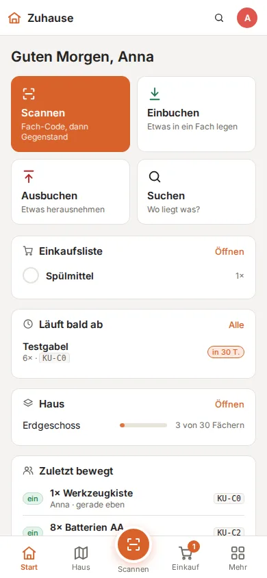
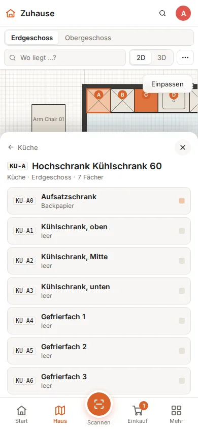
Wall terminal
An old tablet on the wall becomes the control center for everyone in the house – without personal sign-in, with large touch targets and an idle mode that shows the house as it looks outside.
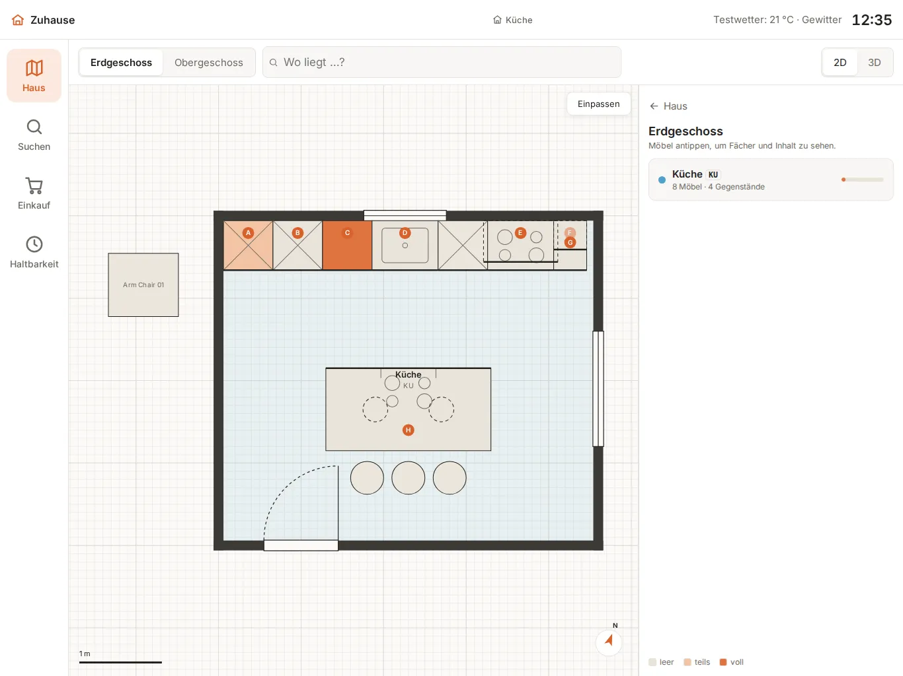
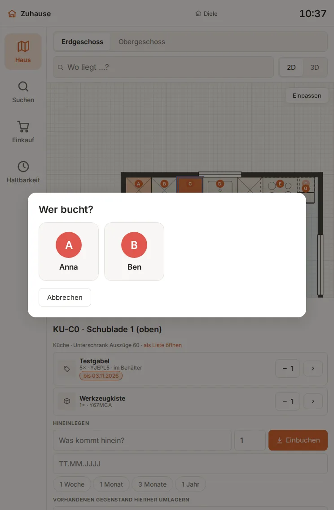
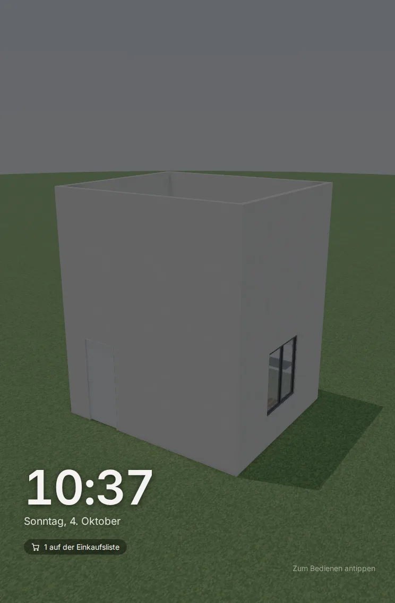
Set up in a minute
- Administration → Wall terminals → add one and name it after its place ("Hallway")
- Open the setup link or its QR code on the tablet – done, no password on the device
- Per device: portrait or landscape, house as floor plan or 3D, light/dark, font size up to "very large"
- Delay before returning to the house, idle mode on/off, level of detail (draft 15 s, normal 30 s, high 90 s) and postal code for the weather
- Only the relevant pages: house, search, shopping, tasks, expiry and speaking with the assistant – planning is locked on the terminal; regenerate the link or remove the terminal at any time
Booking for everyone
- Tap a compartment, see its contents, check in or take one out with − 1
- "Who is booking?" tiles with everyone – the history shows who took what
- The selected person is remembered for 90 seconds, for several transactions in a row
- Large touch targets, search "Where is …?" with matches in the house
- When not in use, the terminal jumps back to the house
Idle mode
- The house dimmed and photorealistic, with a flat viewing angle and lawn around it
- Large clock, date, weather, shopping list and what expires soon
- Sun, sky and weather as outside – see live weather
- Economical: re-renders only when the sun or weather changes; pauses when the screen is hidden, last image remembered
- A tap wakes the terminal instantly
Live weather at the house
Enter your house's location – and the wall terminal shows sun, sky and weather just as you see them through the window. No account and no API key needed.
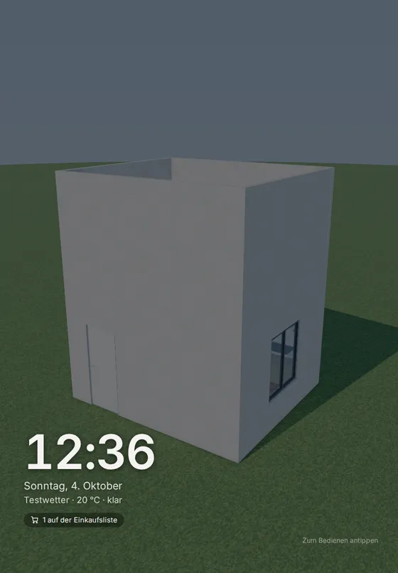
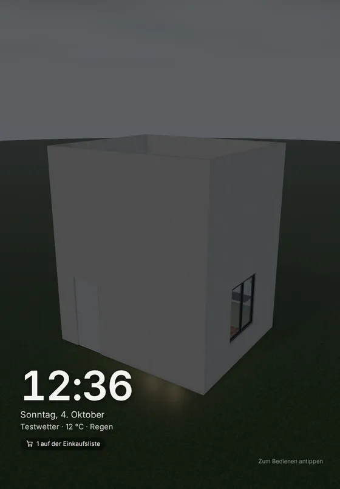
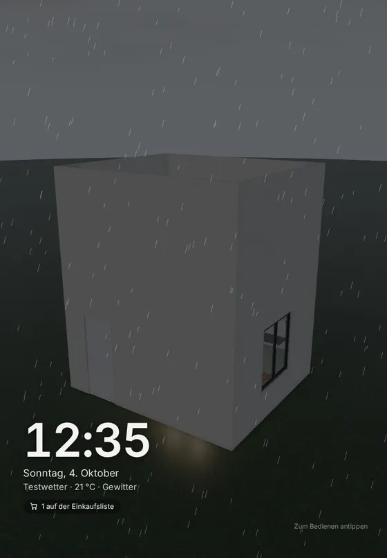
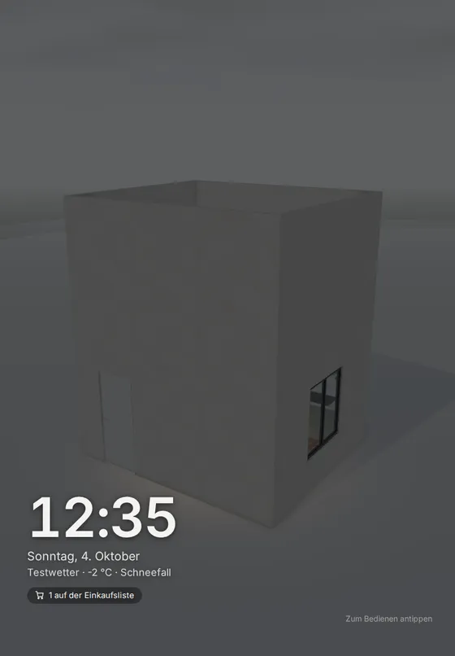
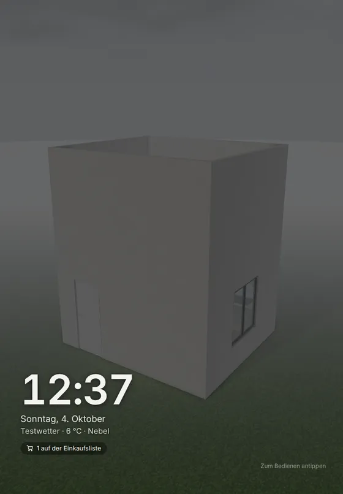
Sun and sky
- House location (Plan → ⋯): search for an address or postal code or enter coordinates, north direction via compass – the floor plan shows a north arrow
- Sun position from location and time: shadows fall as they do outside
- Sky and light follow every minute: day, dusk, night with lamps switched on and moonlight
Clouds, rain, snow
- Clouds according to real cloud cover, colored by time of day, drifting with the wind – in the photorealistic image too
- Rain and drizzle as a subtle animation, intensity based on the real rain rate (mm/h); the lawn gets wet
- Snow grows as a patch: first on and in front of the terrace, from ~10 cm the whole garden; the roof goes from dusted to white
- Fog and haze based on visibility; temperature and precipitation in the header
Thunderstorms in real time
- Every lightning strike nearby arrives instantly (Blitzortung.org, via server-sent events)
- Close strikes (≤ 30 km) make the screen flash
- Warning in the header from 20 km away
- In idle mode: last strike with distance, direction and age, count and a lightning map (10/25/50 km)
Data: location via OpenStreetMap, weather via Open-Meteo (every 15 minutes), lightning via Blitzortung.org – no account, for private use. To try it out there is test weather: open the terminal address with ?testwetter=schnee (snow; also regen rain, gewitter thunderstorm, nebel fog, schneesturm blizzard, wolkenbruch downpour …). The images above were made that way.
A real house
homemgmt-ng was built for a real single-family house – basement, two living floors, attic and outdoor area. This is what its plan looks like.
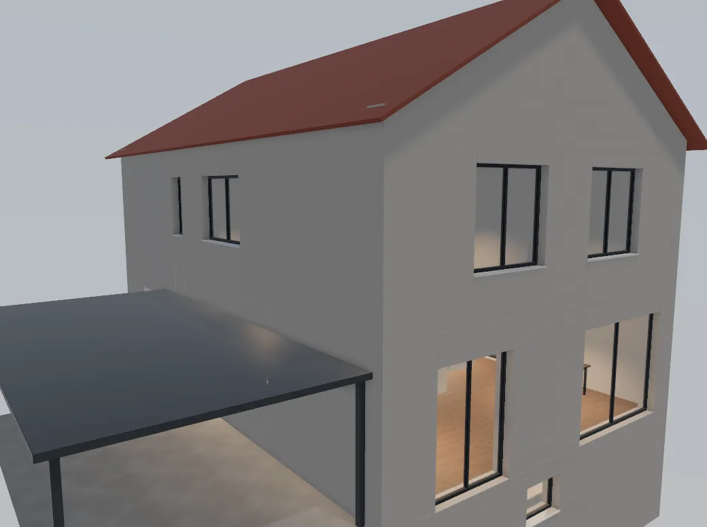
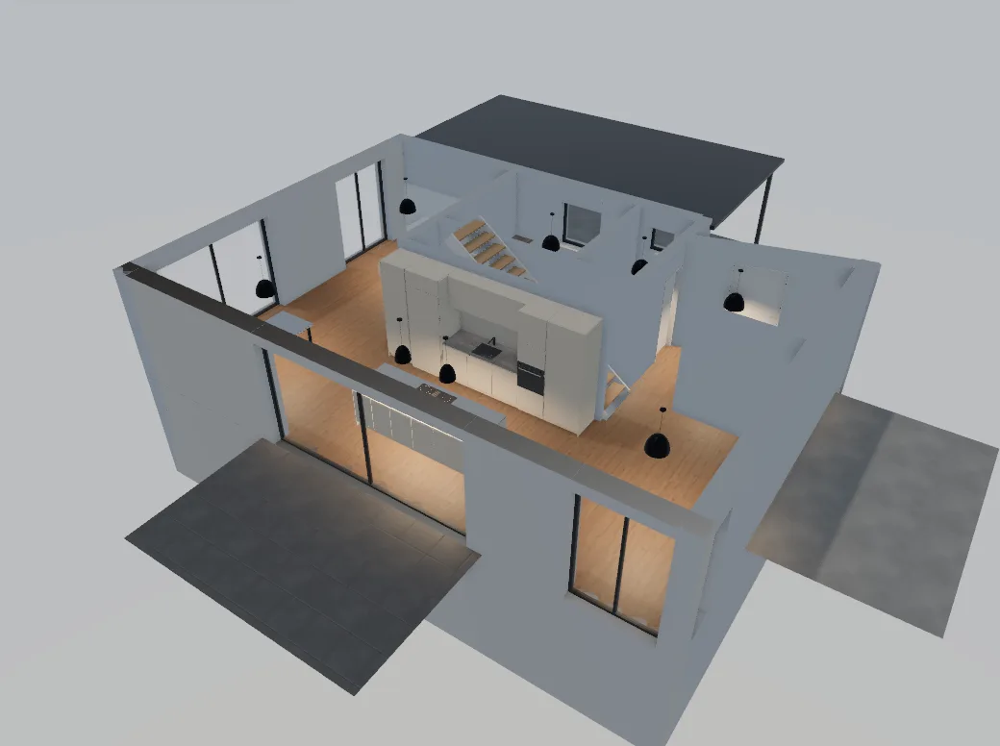
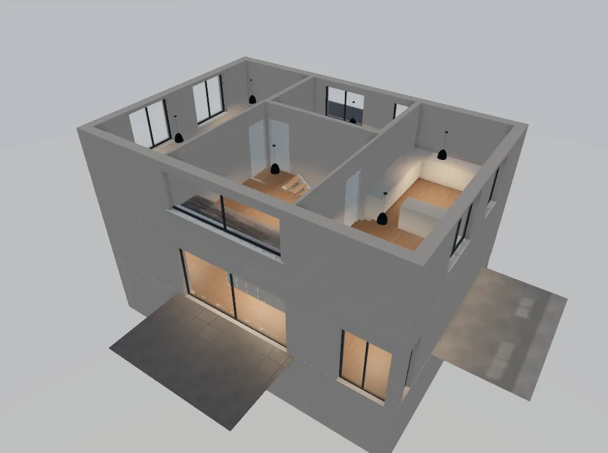

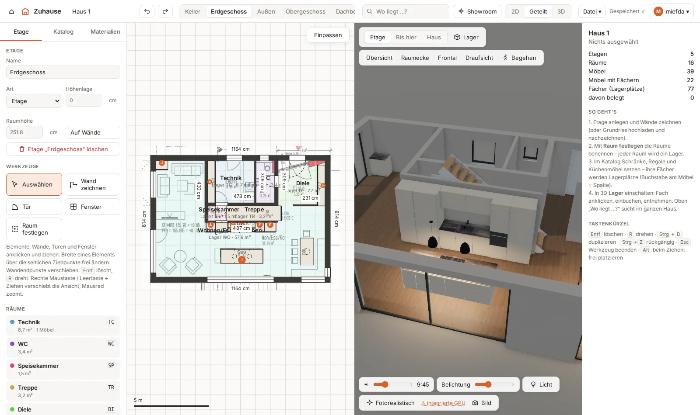
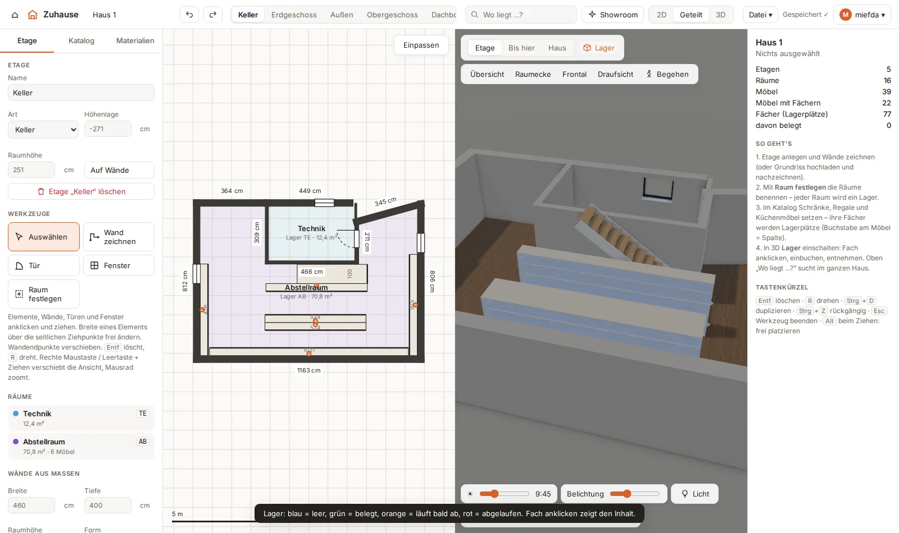
All features in detail
What else homemgmt-ng can do – from floor plan to backup.
House planner
- Floors: basement, living floors, attic with gable roof and knee wall, outdoor area – with elevation and room height
- Walls with snapping and dimensions, or a floor plan scan as a template with scale; the floor below as a tracing layer
- Rooms detected with a click – they follow when walls are moved; custom flooring
- Doors, windows, stairs with stairwell, passages disguised as cabinets, terrace, parking space, carport
- Lock objects (key
L), undo/redo, automatic saving with conflict protection
3D and furniture
- Furniture catalog: kitchen cabinets, shelf units, heavy-duty shelving, pantry and wardrobe, sideboard, chest of drawers, workbench
- Object library: build your own furniture types in the editor with a 3D preview – columns, drawers, doors with shelves, open compartments or your own model; every compartment becomes a location. Ready-made furniture types from the community catalog, contribute your own via pull request
- 3D library: over 500 models from Poly Haven (CC0) and thousands from FurniMesh, searchable in German too; your own
.glb - View floor, "Up to here" or whole house; selected furniture highlighted, the rest transparent
- Photorealistic via GPU path tracing, daylight by time of day, light controls, save image
- Walk-through like in a game: walls block you, thresholds are stepped over, stairs lead to other floors
Inventory in the plan
- Room = storage area, furniture = column, compartment = location (
KU-B2= kitchen, furniture B, compartment 2) – automatically from the front layout - Check in, take out, move, every transaction with undo and a history per item
- Containers: a box inside the toolbox – when it is moved, its contents move along
- Items with photos, suggestions when checking in, multiple storage areas (garage, basement …)
- Insights and a heatmap in the house: fill level, activity (90 days), long untouched
Scanning and labels
- Camera scan: compartment code, then item = check in; the same item twice = take out
- Unknown pre-printed label = new item; fill containers by scanning
- Handheld scanners and manual input too; QR links open the compartment or item directly
- Labels for compartments (by floor/room/furniture), items and blank labels kept in stock
- 3D-printed QR signs as STL or multicolor 3MF, distributed across build plates
Shopping and expiry
- Consumables land on the shopping list automatically when taken out
- Tick off, mark as bought and check straight back in, free entries ("milk")
- Share via WhatsApp, the share menu, copy or as text; price research for your area
- Best-before date with quick picks (1 week … 1 year), warnings before and after expiry
- "Expiring soon" list: expired, 7 days, 30 days, 3 months, 1 year
People and permissions
- Sign-in with tile + PIN/password or email; initial setup directly in the app
- Roles, archive, merge people, registration with approval
- "Plan the house" permission per person – the server checks it too
- Settings per person: home page, house in 2D or 3D, light/dark, font size, language (German or English)
Phone and offline
- Installable as an app with shortcuts (Assistant, Scan, Check in, Search, Shopping, House)
- Navigation at the bottom, Scan in the middle, compartments as a bottom sheet
- Poor Wi-Fi: transactions are queued ("2 transactions waiting") and synced – never twice
- Scanning compartments and items works without a network too
AI assistant and MCP
- Assistant by text, voice or photo: "3 cans of tomatoes into the basement, best before 05/2027"
- Shelf inventory by photo: recognizes all items in the picture and checks them into the compartment in one step
- Speak to the wall terminal, as home page or as a shortcut on the app icon
- Knows compartments by name ("kitchen fridge top"), reads QR labels in photos, reads answers aloud
- Books by itself with undo, asks for confirmation from 4 transactions; any OpenAI-compatible provider
- MCP server: Claude and others search, book and read the shopping list – with an API key, read-only or read-write
Operation and data
- One process, one SQLite file – Docker or Node.js, also on a NAS or Raspberry Pi
- Automatic backups; create, download, upload and restore with a click
- Export/import as Excel or CSV with preview
- REST API and API keys for your own extensions; HTTPS directly or via a reverse proxy
Installation
One Node process, one SQLite file. Runs on a NAS, a Raspberry Pi or your home server.
git clone https://github.com/mupf-dev/Homemgmt.git
cd Homemgmt
docker compose up -d --build
# App: http://localhost:3000 · MCP: Port 3100# requires Node.js ≥ 22.18
git clone https://github.com/mupf-dev/Homemgmt.git
cd Homemgmt
npm install
npm run build && npm start
# → http://localhost:3000npm install
npm run dev # Vite-HMR → http://localhost:3000
npm test # API tests
npm run typecheck
npm run test:e2e # click-through test in the browsernpm run cert is enough (the app is then on port 3443); for permanent use, a reverse proxy with TRUST_PROXY=1.- Initial setupOn first start, tap "New person" and choose a password – this person becomes admin.
- Invite peopleAdd more household members under Administration → People, optionally with the "Plan the house" permission.
- BackupsRun automatically every 24 hours, 14 are kept – configurable via environment variables.
Guide
The most important workflows in brief. The complete manual is in the repository. The app is available in German and English – the language follows your browser and can be switched under My account.
1 · Set up your house
House → Plan. Add floors with +, draw walls or upload a floor plan and trace it.
2 · Define rooms
Choose Define room and click into an enclosed area. Give it a name and code – and the storage area is ready.
3 · Place furniture
Cabinets from the catalog snap to walls. R rotates, Alt places freely. Every piece of furniture gets a letter.
4 · Check in
Tap a compartment, type "What goes in?", Check in. On the phone, scanning is faster.
5 · Stick on labels
More → Labels & QR signs: print and attach compartment labels, keep blank labels ready for new things.
6 · Wall terminal
Administration → Wall terminals → add one, open the setup link on the tablet. Done.